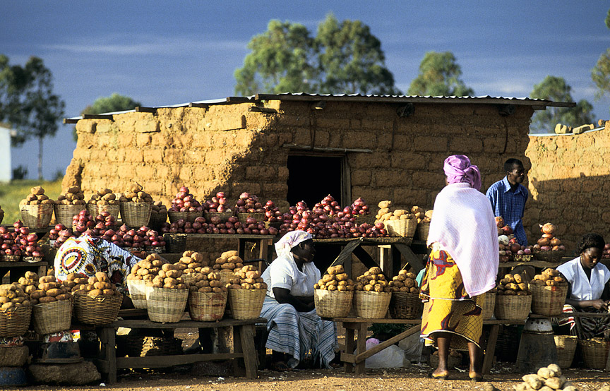

The Nigerien Constitution grants equal rights regardless of gender. Niger has ratified both the Convention on the Elimination of All forms of Discrimination against Women (CEDAW) (in 1999), and the Optional Protocol on violence against women (2004).Niger has signed but not ratified the Protocol to the African Charter on Human and Peoples’ Rights on the Rights of Women in Africa. A Ministry of Social Development, Population, Advancement of Women and Protection of Children has been in place since 1998.
Links: http://genderindex.org/country/niger
etc...